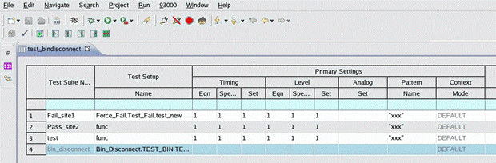
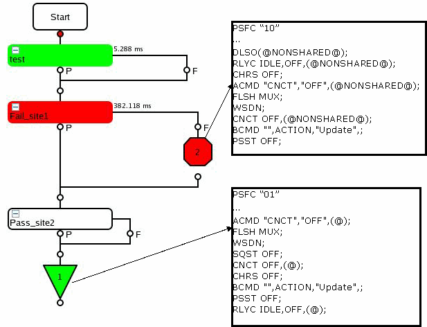

Implementing bin_disconnect to overcome the pass or fail site dependency issue
About this task
This task describes how to implement bin_disconnect in your testflow to resolve the pass or fail site dependency.
Follow the steps below to insert the bin_disconnect test suite into the testflow.
Before you begin
Make sure the test method for disconnecting (Special test suite bin_disconnect) has been created.
Procedure
Results
Special test suites like bin_disconnect do not appear as icons in the Flow Sequence Editor.
However, they are displayed at the end of the Test Suites page in the Flow Data Editor when sorting by default in the Flow Data Editor as the picture below shows.

Example
This is the sample code created following the use model in Special test suite bin_disconnect:
ARRAY_I enabledSites;
INT numEnabledSites;
INT hwBinNumber, goodBin, reprobe, overon, otherwiseBin;
STRING hwBinDescription, swBinDescription, swBinNumber;
const string nonshareddisconnect="DLSO(@NONSHARED@); \n RLYC IDLE,OFF,(@NONSHARED@); \n CHRS OFF;
\n ACMD \"CNCT\",\"OFF\",(@NONSHARED@); \n FLSH MUX; \n WSDN; \n CNCT OFF,(@NONSHARED@);
\n BCMD \"\",ACTION,\"Update\",; PSST OFF;";
const string finaldisconnect ="ACMD \"CNCT\",\"OFF\",(@); \n FLSH MUX; \n WSDN; \n SQST OFF;
\n CNCT OFF,(@); \n CHRS OFF; \n BCMD \"\",ACTION,\"Update\",; \n PSST OFF;
\n RLYC IDLE,OFF,(@);";
numEnabledSites = GET_ENABLED_SITES(enabledSites);
cerr <<"#enabledSites: " << numEnabledSites << endl;
if(numEnabledSites == 0) //last site(s) to be disconnected
{
cerr << "do final disconnect with: "<< finaldisconnect << endl;
FW_TASK(finaldisconnect);
}
else //not the last site to be disconnected
{ //only disconnect current site and keep shared resources connected
cerr << "do shared disconnect with: "<< nonshareddisconnect << endl;
FW_TASK(nonshareddisconnect);
}
GET_CURRENT_BIN_INFORMATION(&hwBinNumber, hwBinDescription, swBinNumber, swBinDescription,
&goodBin, &reprobe, &overon, &otherwiseBin);
cerr << "hw Bin Description: " << hwBinDescription << endl;
cerr << "hw Bin number:" << hwBinNumber << endl;The implementation of this test method in a 2-site testflow (site 1 fails, and site 2 passes, while site 1 is in focus as in the figure below) produces the following output in MCDLog file.

When site 1 fails and is binned out, site 2 is still enabled. So the site 1 related pins are disconnected and the shared pins of both sites stay connected until site 2 passes and reaches the end of the testflow.
Since site 2 is the last enabled site, the final disconnect sequence is executed on all pins (using "@").
From the example above, you can see it is possible to define separate disconnect sequences for different bins.
Apart from controlling the disconnect behavior in Smartest with a test method in this special bin_disconnect test suite, you could also output the desired debug information of each bin via the GET_CURRENT_BIN_INFORMATION API.
Functional changes
- Introduced in SmarTest 6.5.2